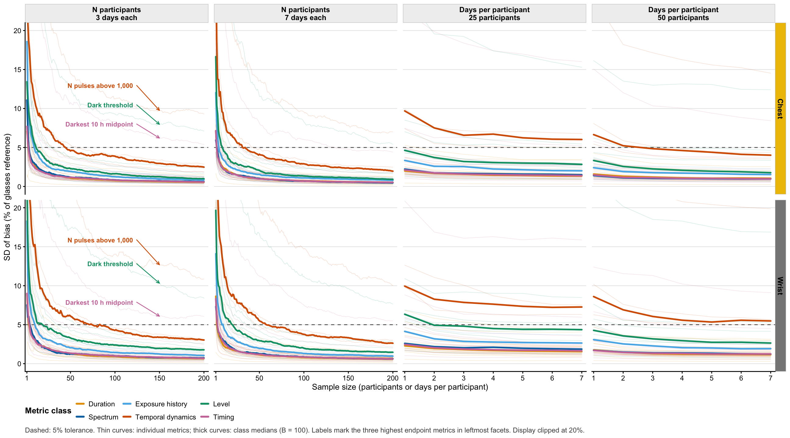

Setup
library(tidyverse)
library(readxl)
library(LightLogR)
library(cowplot)
library(gt)
library(here)
if (packageVersion("LightLogR") < package_version("0.10.3")) {
stop("This analysis requires LightLogR 0.10.3 or newer.", call. = FALSE)
}The metric comparison established that wearing position (chest and wrist, relative to the glasses reference) introduces outcome-level bias in personal light-exposure metrics. This notebook asks a complementary, design-oriented question:
How does the precision of the estimated bias change as participants and participant-days accumulate?
The analysis includes every metric with daily observations. Interdaily stability (IS) and intradaily variability (IV) are excluded because they are defined across multiple days and therefore have no participant-day estimates. The remaining metrics are summarized by the six metric classes used in the primary analysis: duration, exposure history, level, spectrum, temporal dynamics, and timing.
Two bootstrap axes are evaluated for both chest and wrist:
At each sample size, the standard deviation (SD) of the bootstrapped mean bias quantifies sampling uncertainty. Bias is calculated on each metric’s model scale and normalized to the absolute mean glasses reference on that scale. The normalized SDs are then summarized pointwise by their median within each metric class. A 5% SD is used as a practical precision tolerance.
Setup
library(tidyverse)
library(readxl)
library(LightLogR)
library(cowplot)
library(gt)
library(here)
if (packageVersion("LightLogR") < package_version("0.10.3")) {
stop("This analysis requires LightLogR 0.10.3 or newer.", call. = FALSE)
}The prepared long-format metric data and their model metadata are loaded from the same sources used by the metric-comparison notebook. The reusable bootstrap helpers are kept in a separate script so the sampling and aggregation logic can be tested independently.
Import metrics, metadata, and helpers
load(here("data/prepared_metrics.RData"))
metric_info <- read_xlsx(here("data/metric_types.xlsx"))
source(here("scripts/bootstrap_stability.R"))A single seed makes all bootstrap scenarios reproducible. The source notebook defaults to 10,000 draws for production. The draw count is a parameter so a render can be tested quickly with, for example, quarto render notebooks/_JZ_error_stabilisation.qmd --execute -P draws:100.
Analysis settings
production_draws <- 10000L
draws <- as.integer(params$draws)
if (length(draws) != 1L || is.na(draws) || draws < 2L) {
stop("`params$draws` must be one integer greater than one.", call. = FALSE)
}
days_per_participant <- c(3L, 7L)
day_axis_participants <- c(25L, 50L)
tolerance <- 5
set.seed(7391)
position_colors <- ggsci::pal_jco()(3) |>
set_names(c("glasses", "chest", "wrist"))
metric_class_labels <- c(
duration = "Duration",
`exposure history` = "Exposure history",
level = "Level",
spectrum = "Spectrum",
`temporal dynamics` = "Temporal dynamics",
timing = "Timing"
)This is a computational test render with B = 100 draws; it verifies execution and layout, while the default production render uses B = 10,000.
The inclusion rule is data-driven: retain all metrics present in both the prepared data and metadata, except IS and IV. Explicit checks prevent a silent drop if the prepared data and metadata diverge.
Define and verify daily metric set
excluded_metrics <- c("interdaily_stability", "intradaily_variability")
data_metrics <- sort(unique(metrics$metric))
missing_exclusions <- setdiff(excluded_metrics, data_metrics)
if (length(missing_exclusions) > 0L) {
stop(
"Expected non-daily metrics are absent from the prepared data: ",
paste(missing_exclusions, collapse = ", "),
".",
call. = FALSE
)
}
missing_metadata <- setdiff(data_metrics, metric_info$name)
if (length(missing_metadata) > 0L) {
stop(
"Prepared metrics lack metadata: ",
paste(missing_metadata, collapse = ", "),
".",
call. = FALSE
)
}
target_metrics <- setdiff(data_metrics, excluded_metrics)
target_info <- metric_info |>
filter(name %in% target_metrics)
if (nrow(target_info) != length(target_metrics)) {
stop("The daily metric selection is not one-to-one with its metadata.", call. = FALSE)
}
metric_class_counts <- target_info |>
count(metric_type, name = "n_metrics") |>
mutate(
metric_class = factor(
metric_type,
levels = names(metric_class_labels),
labels = unname(metric_class_labels)
)
) |>
arrange(metric_class)The analysis contains 52 daily metrics. Class sizes are shown because the class curves summarize different numbers of metric-specific traces using the pointwise median.
Daily metric inventory by class
metric_class_counts |>
select(`Metric class` = metric_class, Metrics = n_metrics) |>
gt() |>
tab_header(
title = "Daily metrics included in the stability analysis",
subtitle = "IS and IV excluded because participant-day estimates are unavailable"
) |>
fmt_integer(columns = Metrics) |>
cols_align("center", columns = Metrics) |>
tab_style(
style = cell_text(weight = "bold"),
locations = cells_column_labels()
) |>
tab_options(table.width = px(620))| Daily metrics included in the stability analysis | |
| IS and IV excluded because participant-day estimates are unavailable | |
| Metric class | Metrics |
|---|---|
| Duration | 12 |
| Exposure history | 2 |
| Level | 9 |
| Spectrum | 1 |
| Temporal dynamics | 5 |
| Timing | 23 |
For each metric, values are placed on the same scale used in the primary metric models. Positions are then aligned within participant-day and the paired bias is calculated for chest and wrist against glasses:
\[ \text{bias}_{i d p m} = \text{value}^{\text{model}}_{i d p m} - \text{value}^{\text{model}}_{i d,\,\text{glasses},\,m}. \]
The bootstrap SD for metric \(m\) is divided by the absolute mean model-scale glasses value for that metric and multiplied by 100. This normalization makes the metric-specific SD curves commensurable. The publication figure retains every metric curve and overlays its metric-class median.
Compute paired biases for all daily metrics
scales <- derive_metric_scales(metric_info)
bias_df <- metrics |>
filter(metric %in% target_metrics) |>
compute_bias(scales)
if (n_distinct(bias_df$metric) != length(target_metrics)) {
stop("Not every selected daily metric produced a paired bias.", call. = FALSE)
}
bias_coverage <- bias_df |>
count(metric, position, name = "participant_days")
if (nrow(bias_coverage) != 2L * length(target_metrics)) {
stop("Not every daily metric has paired chest and wrist biases.", call. = FALSE)
}
bias_coverage |>
summarise(
metrics = n_distinct(metric),
positions = n_distinct(position),
`paired participant-days (minimum)` = min(participant_days),
`paired participant-days (maximum)` = max(participant_days)
)# A tibble: 1 × 4
metrics positions `paired participant-days (minimum)` paired participant-day…¹
<int> <int> <int> <int>
1 52 2 152 604
# ℹ abbreviated name: ¹`paired participant-days (maximum)`Both axes use hierarchical resampling with replacement. For the participant axis, each bootstrap replicate samples \(N\) participants and then samples exactly 3 or 7 valid paired days from each selected participant’s empirical daily-bias distribution. For the participant-day axis, each replicate first samples 25 or 50 participants and then samples 1–7 days from each. Sampling days with replacement retains participants with fewer observed valid days while making the target design size explicit.
The participant axis extends to 200 as an empirical-distribution projection, although the prepared cohort contains 106 participants. It therefore describes expected sampling precision under repeated sampling from this cohort’s empirical distribution, not the acquisition of new independent population information.
Bootstrap all daily metrics and four design scenarios
metric_stability <- bootstrap_stability(
bias_df,
n_range = 1:200,
day_range = 1:7,
B = draws,
days_per_participant = days_per_participant,
day_axis_participants = day_axis_participants
)Class medians are overlaid on the individual metric traces in the publication figure and are the sole basis of the crossing table. For each position, design scenario, and sample size, the pointwise median is taken across all normalized metric-specific SDs in that class. This robust summary limits the influence of unusually unstable metrics while the faint traces retain their information.
Take median metric-specific SD within class
class_stability <- median_metric_classes(metric_stability)
observed_class_counts <- class_stability |>
distinct(metric_class, n_metrics) |>
arrange(metric_class)
expected_class_counts <- metric_class_counts |>
transmute(metric_class = metric_type, n_metrics) |>
arrange(metric_class)
if (!identical(observed_class_counts, expected_class_counts)) {
stop("The class-median metric denominators do not match the inventory.", call. = FALSE)
}The eight panels cross wearing position (rows) with the four design scenarios (columns). Faint colored lines show every daily metric, while the thicker lines show their pointwise metric-class medians. The dashed line marks the 5% SD tolerance. In each leftmost facet, right-aligned direct labels and arrows identify the three individual metrics with the largest SD at 200 participants. The first two columns vary participants from 1 to 200 with 3 or 7 days each. The final two vary days per participant from 1 to 7 with 25 or 50 participants. To preserve detail around the tolerance, the display is clipped at 20%; larger SDs remain in the analysis.
Metric-class stability by design scenario
fig_stability <- plot_stability(
metric_stability,
class_stability,
position_colors = position_colors,
metric_class_labels = metric_class_labels,
tol = tolerance,
ylim = c(0, 20),
draws = draws
)
fig_stability
Save publication figure
ggsave(
here("output/figures/Fig_bias_stability.pdf"),
fig_stability,
width = 13.5,
height = 7.5,
device = cairo_pdf,
bg = "white"
)
ggsave(
here("output/figures/Fig_bias_stability.jpeg"),
fig_stability,
width = 13.5,
height = 7.5,
dpi = 600,
bg = "white"
)For every class, position, and design scenario, the table reports the first sample size at which the class-median SD is at or below 5%. A dash means the tolerance is not reached within 1–200 participants or 1–7 days per participant. The crossing applies to the class median and does not imply that every individual metric in that class has crossed the tolerance.
Class-median sample size to reach 5 percent SD
crossing_wide <- crossing_table(class_stability, tol = tolerance) |>
mutate(
metric_class = factor(
metric_class,
levels = names(metric_class_labels),
labels = unname(metric_class_labels)
),
scenario_code = case_when(
boot_type == "participants" & days_per_participant == 3L ~ "p3",
boot_type == "participants" & days_per_participant == 7L ~ "p7",
boot_type == "participant-days" & n_participants == 25L ~ "d25",
boot_type == "participant-days" & n_participants == 50L ~ "d50",
.default = NA_character_
),
position = str_to_lower(position),
output_column = paste(scenario_code, position, sep = "_")
) |>
select(metric_class, n_metrics, output_column, n_within) |>
pivot_wider(names_from = output_column, values_from = n_within) |>
arrange(metric_class)
crossing_columns <- c(
"p3_chest", "p3_wrist",
"p7_chest", "p7_wrist",
"d25_chest", "d25_wrist",
"d50_chest", "d50_wrist"
)
if (!all(crossing_columns %in% names(crossing_wide))) {
stop("The crossing table is missing at least one design-position column.", call. = FALSE)
}
crossing_wide <- crossing_wide |>
select(metric_class, n_metrics, all_of(crossing_columns))
crossing_gt <- crossing_wide |>
gt(rowname_col = "metric_class") |>
tab_stubhead(label = "Metric class") |>
cols_label(
n_metrics = "Metrics",
p3_chest = "Chest",
p3_wrist = "Wrist",
p7_chest = "Chest",
p7_wrist = "Wrist",
d25_chest = "Chest",
d25_wrist = "Wrist",
d50_chest = "Chest",
d50_wrist = "Wrist"
) |>
tab_spanner(
label = "3 days each",
columns = c(p3_chest, p3_wrist),
level = 1,
id = "participants_3",
gather = FALSE
) |>
tab_spanner(
label = "7 days each",
columns = c(p7_chest, p7_wrist),
level = 1,
id = "participants_7",
gather = FALSE
) |>
tab_spanner(
label = "25 participants",
columns = c(d25_chest, d25_wrist),
level = 1,
id = "days_25",
gather = FALSE
) |>
tab_spanner(
label = "50 participants",
columns = c(d50_chest, d50_wrist),
level = 1,
id = "days_50",
gather = FALSE
) |>
tab_spanner(
label = "N participants",
spanners = c("participants_3", "participants_7"),
level = 2,
id = "participant_axis"
) |>
tab_spanner(
label = "Days per participant",
spanners = c("days_25", "days_50"),
level = 2,
id = "day_axis"
) |>
fmt_integer(columns = c(n_metrics, all_of(crossing_columns))) |>
sub_missing(columns = all_of(crossing_columns), missing_text = "—") |>
cols_align("center", columns = c(n_metrics, all_of(crossing_columns))) |>
cols_width(
n_metrics ~ px(65),
all_of(crossing_columns) ~ px(82)
) |>
tab_header(
title = "Sample size for class-median bias SD ≤ 5%",
subtitle = paste0(
length(target_metrics),
" daily metrics; pointwise median within class; B = ",
format(draws, big.mark = ","),
" bootstrap draws"
)
) |>
tab_source_note(
md(
paste0(
"**Note.** Cells give the first N participants (left) or days per ",
"participant (right) meeting the tolerance. — indicates no crossing ",
"within the evaluated range. A class-median crossing does not imply ",
"that every metric in the class meets the tolerance."
)
)
) |>
tab_style(
style = cell_text(weight = "bold"),
locations = list(cells_stub(), cells_column_labels(), cells_column_spanners())
) |>
tab_style(
style = cell_text(color = unname(position_colors[["chest"]]), weight = "bold"),
locations = cells_column_labels(columns = ends_with("_chest"))
) |>
tab_style(
style = cell_text(color = unname(position_colors[["wrist"]]), weight = "bold"),
locations = cells_column_labels(columns = ends_with("_wrist"))
) |>
tab_style(
style = cell_fill(color = unname(position_colors[["chest"]]), alpha = 0.08),
locations = cells_body(columns = ends_with("_chest"))
) |>
tab_style(
style = cell_fill(color = unname(position_colors[["wrist"]]), alpha = 0.08),
locations = cells_body(columns = ends_with("_wrist"))
) |>
tab_options(
table.width = px(1500),
table.font.size = px(14),
heading.align = "left",
column_labels.background.color = "#F3F3F3",
table_body.hlines.color = "#D9D9D9",
source_notes.font.size = px(11)
)
crossing_gt| Sample size for class-median bias SD ≤ 5% | |||||||||
| 52 daily metrics; pointwise median within class; B = 100 bootstrap draws | |||||||||
N participants
|
Days per participant
|
||||||||
|---|---|---|---|---|---|---|---|---|---|
| Metric class | Metrics |
3 days each
|
7 days each
|
25 participants
|
50 participants
|
||||
| Chest | Wrist | Chest | Wrist | Chest | Wrist | Chest | Wrist | ||
| Duration | 12 | 3 | 4 | 2 | 3 | 1 | 1 | 1 | 1 |
| Exposure history | 2 | 10 | 10 | 5 | 8 | 1 | 1 | 1 | 1 |
| Level | 9 | 12 | 19 | 9 | 20 | 1 | 2 | 1 | 1 |
| Spectrum | 1 | 4 | 5 | 3 | 3 | 1 | 1 | 1 | 1 |
| Temporal dynamics | 5 | 45 | 75 | 32 | 58 | — | — | 3 | — |
| Timing | 23 | 3 | 4 | 2 | 3 | 1 | 1 | 1 | 1 |
| Note. Cells give the first N participants (left) or days per participant (right) meeting the tolerance. — indicates no crossing within the evaluated range. A class-median crossing does not imply that every metric in the class meets the tolerance. | |||||||||
Save publication crossing table
gtsave(
crossing_gt,
here("output/tables/Table_crossing.png"),
vwidth = 2200,
zoom = 2
)file:////var/folders/9p/326_k3kx43qbn_cyl1rqfhb00000gn/T//RtmpjzNHx2/file1090e60cf612e.html screenshot completedThe figure isolates precision rather than bias magnitude. Increasing the number of participants reduces uncertainty in the estimated population mean, whereas adding days primarily reduces within-participant sampling uncertainty and is ultimately limited by between-participant heterogeneity. The paired 3- versus 7-day participant scenarios show how much of the participant-axis precision is attributable to longer monitoring. Likewise, the 25- versus 50-participant day scenarios show how study size changes the value of additional days.
The thick class medians provide a concise design summary across all daily metrics, while the faint individual traces expose metric-level heterogeneity. The class medians should therefore be used to compare broad metric classes, not to choose a sample size for a single specific metric. The direct labels in the leftmost facets identify the three metrics with the largest SD at the maximum participant sample size; they are not a separate inferential comparison. A small SD indicates that the placement bias is estimated precisely; it does not indicate that the placement bias itself is small.
sessionInfo()R version 4.5.0 (2025-04-11)
Platform: aarch64-apple-darwin20
Running under: macOS 26.5.2
Matrix products: default
BLAS: /Library/Frameworks/R.framework/Versions/4.5-arm64/Resources/lib/libRblas.0.dylib
LAPACK: /Library/Frameworks/R.framework/Versions/4.5-arm64/Resources/lib/libRlapack.dylib; LAPACK version 3.12.1
locale:
[1] C.UTF-8/C.UTF-8/C.UTF-8/C/C.UTF-8/C.UTF-8
time zone: Europe/Berlin
tzcode source: internal
attached base packages:
[1] stats graphics grDevices utils datasets methods base
other attached packages:
[1] here_1.0.1 gt_1.3.0 cowplot_1.2.0 LightLogR_0.10.3
[5] readxl_1.4.5 lubridate_1.9.4 forcats_1.0.0 stringr_1.6.0
[9] dplyr_1.2.1 purrr_1.2.2 readr_2.1.5 tidyr_1.3.2
[13] tibble_3.3.1 ggplot2_4.0.3 tidyverse_2.0.0
loaded via a namespace (and not attached):
[1] gtable_0.3.6 xfun_0.52 htmlwidgets_1.6.4 websocket_1.4.4
[5] processx_3.8.6 tzdb_0.5.0 vctrs_0.7.3 tools_4.5.0
[9] ps_1.9.1 generics_0.1.4 pkgconfig_2.0.3 RColorBrewer_1.1-3
[13] S7_0.2.2 lifecycle_1.0.5 compiler_4.5.0 farver_2.1.2
[17] textshaping_1.0.1 ggsci_3.2.0 chromote_0.5.1 litedown_0.7
[21] htmltools_0.5.8.1 sass_0.4.10 yaml_2.3.10 pillar_1.11.1
[25] later_1.4.2 webshot2_0.1.2 commonmark_2.0.0 tidyselect_1.2.1
[29] digest_0.6.39 stringi_1.8.7 labeling_0.4.3 rprojroot_2.0.4
[33] fastmap_1.2.0 grid_4.5.0 cli_3.6.6 magrittr_2.0.5
[37] base64enc_0.1-6 withr_3.0.2 scales_1.4.0 promises_1.5.0
[41] timechange_0.3.0 rmarkdown_2.29 otel_0.2.0 cellranger_1.1.0
[45] ragg_1.5.0 hms_1.1.3 evaluate_1.0.4 knitr_1.50
[49] markdown_2.0 rlang_1.3.0 Rcpp_1.1.1-1.1 glue_1.8.1
[53] xml2_1.3.8 jsonlite_2.0.0 R6_2.6.1 systemfonts_1.3.1
[57] fs_2.1.0